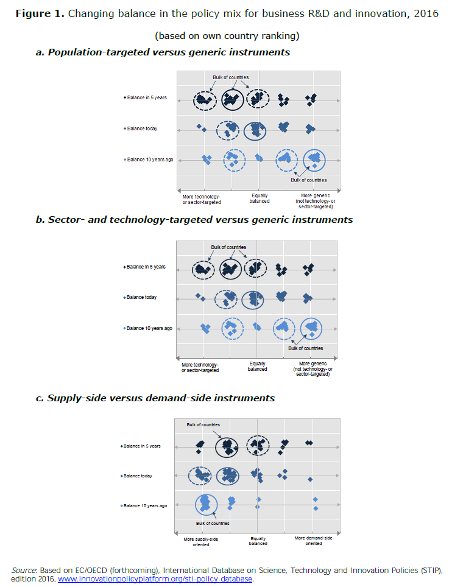

Policy mix for business R&D and innovation

The “policy mix” could be understood as the set of policy rationales, arrangements and instruments implemented to deliver public action in specific policy domains as well as their interactions. The “policy mix” concept refers therefore to: 1) the composition of the “policy mix”, i.e. the relative balance between its components, and 2) the interactions between its components. More specifically in the innovation policy domain, there is no clearly stated and widely acknowledged definition of the concept (Flanagan et al., 2011). And discussions around policy mix often question its normative features in terms of “coherence”, “co ordination”, “efficiency”, “appropriateness”, “balance”, “stability”, “predictability”, “comprehensiveness”, “legitimacy”, etc. (Guy et al., 2009; Nauwelaers et al., 2009; OECD, 2010a; Flanagan, Uyarra and Laranja, 2011; Bórras and Edquist, 2013; Cunningham et al., 2013).
The innovation “policy mix” concept has gained popularity over the past two decades in a context of growing complexity and uncertainty. Its increasing use in the academic literature and policy studies reflects two major trends in science, technology and innovation (STI) policy: first, the increasing complexity of innovation policy, which results from an increasing number and variety of policy objectives, arrangements, stakeholders, targets and instruments, and which requires a more holistic approach in governance, and second, the growing need for policy evaluation to support the design of evidence-based policies (OECD, 2010a) (see also the policy profiles “National strategies for STI”, “Public engagement in STI policy” and “Evaluation and impact assessment of STI policies”, as well as Chapter 4 on “Recent trends in STI and policies”).
The idea of interaction between policies is central to the policy-mix concept. Interactions may be intended or unintended. There may be complementarities, with one policy initiative reinforcing the effectiveness of other policies in the mix. There may also be trade-offs, duplication, counterproductive effects and overall increases in administrative costs that could reduce the efficiency of public action. However, the evidence on the impact of policy mixes and their interplay is remarkably thin (Edler et al., 2012). Evaluations of policy instruments are still largely done in isolation, as “policy mix” and “interplay” concepts are still used in a normative sense. The few evaluations that have been conducted remain focused on the interactions of two or three instruments but rarely consider the interplay of one instrument with broader mixes (see Cunningham et al., 2013, for a review of evidence on innovation policy mixes).
There are several obstacles that hamper operationalising a “policy mix”-based approach in evaluation (Kergroach, forthcoming-a). For instance, one difficulty in going beyond the instrument mix and taking account of policy processes and lock-ins, including the sequencing of initiatives, is the great variety of actors involved in innovation processes. The lack of international standards also limits possibilities to integrate individual initiatives in mapping and evaluation, and restrains the dialogue between different policy information platforms and repositories, including across countries and policy domains. For instance, at a time when innovation is set to address multiple societal challenges, there is a need to bridge information and evidence on the environmental policy mix with information and evidence on the eco-innovation policy mix (Rogge and Reichardt, 2013). Beyond these conceptual gaps, there is also a major issue regarding the availability of policy information and the way it could be collected and managed so as to support a comprehensive mapping, international benchmarking and further empirical analysis. Recent shifts in paradigms for both the policy-mix concept and data-management systems (i.e. semantic-based technologies) are paving the way for new developments that could allow circumventing past conceptual and technological shortcomings (Kergroach, forthcoming-b).
In 2012, in the framework of preparing for the STI Outlook, the OECD started a large-scale mapping of the innovation policy mix in OECD countries and major non-OECD economies. In 2015, the European Commission and the OECD joined forces as part of efforts to develop a co ordinated approach to collecting information in support of innovation policy analysis. The EC/OECD International Survey on STI Policies (STIP) covers over 50 countries that account for an estimated 98% of global R&D. It addresses all areas of STI policy, spreading across different ministries and national agencies, with competence over domains as broad as research, innovation, education, industry, environment, labour, finance/budget and others.
This profile focuses in particular on the policy mix for business R&D and innovation and on how it may have changed in recent years and how it is expected to change in the near future in the 52 countries that participated in the STIP survey 2016.
Firms are major actors in national innovation systems. They turn ideas into economic value and jobs, account for the largest share of domestic R&D in many countries and also carry out non-technological innovation. In addition, start-ups can exploit knowledge that is not used or is underused by existing companies. This is especially true in knowledge-intensive sectors.
Public support for business R&D, business innovation and innovative entrepreneurship is provided through a comprehensive toolbox of instruments (Kergroach et al., forthcoming-b):
- Financial support is provided through an array of instruments that can be direct (e.g. grants, loans and guarantees, risk-sharing mechanisms, equity funding schemes, public procurement etc.), indirect (e.g. tax concessions) or mixed (e.g. mezzanine funding).
- Non-financial (“soft”) support includes the provision of services (networking, training, information campaigns, etc.), access to facilities (ICT, technology platforms, accelerators, etc.), the provision of staff (e.g. through detachment, mentorship programmes, etc.) and the provision of visibility and recognition (e.g. prizes, awards, technical norms, standards, etc.).
- Platforms and STI infrastructures are “systemic” or system-enabling infrastructures because they support and strengthen interactions and knowledge flows between STI actors. This category of instruments includes large-scale interfaces, platforms, infrastructures and networking facilities (e.g. accelerators).
- Regulatory instruments set and constrain firms’ behaviours and interactions. This includes a broad range of Acts, Laws and binding regulations in wide-ranging areas with an impact on firms’ behaviours and decisions (e.g. IPRs, University Act, immigration).
- Institutions and governance encompass all governance arrangements at national, regional and local level and the institutions and norms that are relevant to the national innovation system, since they rule its functioning and determine its efficiency. This includes governance practices and principles in contract-based relationships between central governments and agencies and actors (e.g. public-private partnerships, dedicated innovation agencies, etc.).
Policy intervention for business innovation targets a great variety of actors, including firms but others too. Public support could be differentiated by firms’ size, age, industry (or sector), technological level or R&D intensity. It could also target non-business actors, such as universities (e.g. to encourage academic consultancy, sectoral mobility and collaborative R&D), STI intermediaries (e.g. incubator staff), public administrations (e.g. to encourage public procurement for innovation and easier access for SMEs to public tenders) and individuals (e.g. entrepreneurs, the highly skilled, etc.).
Some of the most popular characterisations of the policy mix are binary in nature, e.g. supply-side versus demand-side instruments, direct versus indirect funding, generic versus targeted support, etc.
A policy mix is also country-specific, i.e. it could vary significantly across countries, and it is not set once and for all. In 2008, France operated a full turn-around in its policy mix by increasing its research tax credit (CIR) from one-third to two-thirds of total government funding to business R&D (OECD, 2012). But there are well-established national archetypes of business innovation policy. For example, Belgium, Canada and the Netherlands have adopted a strong indirect funding approach towards business support, in using R&D tax incentives. But Estonia, Finland, Germany, Mexico, Switzerland and Sweden provide only direct support. China stands as an exception with its large equity funding portfolio (see also the policy profile “Government financing of business R&D and innovation”).
Governments intend to improve the capacity and competences of firms for R&D and innovation. This strategic objective is central to national innovation policy in most countries covered in the STI Survey, whatever the degree of advancement and the national peculiarities of their innovation system. Current economic and budgetary conditions have prompted governments to further encourage business innovation and entrepreneurship in an effort to restore productivity and escape a low-growth trap (see the policy profile “National strategies for STI” and Chapter 4 on Recent Trends in STI and policies).
The STIP Survey 2016 invited countries to rate the balance in their policy mix for business R&D and innovation over time (ten years ago, today and in the next five years) for three sets of policy instruments: population-targeted versus generic instruments; sector- or technology-targeted versus generic instruments; and supply-side versus demand-side instruments (Figure 1).
Population-targeted versus generic (non-population-targeted) instruments
Population-targeted instruments are those targeted towards specific types of firms, especially SMEs or new-technology-based firms (see the policy profile “Start-ups and innovative entrepreneurship”). Figure 1(a) indicates that many countries have moved towards more population-targeted instruments over the last decade and that this will continue in the next five years. This trend is also noticeable for tax incentives for R&D that are non discretionary instruments by nature but which have been increasingly geared towards SMEs (see the policy profile on “Tax incentives for R&D”). There are, however, some exceptions. The instrument mix in Ireland, Poland and the United Kingdom has been and will remain predominantly generic, while that of Sweden is increasingly moving away from population-targeted instruments.
Sector- and technology-targeted versus generic (non-technology-targeted) instruments
Sector- and technology-targeted instruments support specific fields of R&D and innovation or specific industry sectors (see the policy profiles “”New industrial policies” and “Cluster and regional policies” and the series of profiles on sectoral innovation). Figure 1(b) shows that countries vary markedly in the balance of sector/technology-oriented and non-sector/non-technology-oriented instruments, most of them being on an equal balance today. However, there are numerous countries that anticipate a shift in their policy mix towards the use of more sector/technology-targeted instruments. This trend is in line with a recent regain in interest in a new generation of industrial policies and large EU-driven developments of smart specialisation strategies. Korea is, however, moving in the opposite direction, and several countries, including Canada, Ireland, the Netherlands, Poland and Switzerland, expect to maintain their generic approach to public action over the next five years.
Supply-side versus demand-side instruments
Supply-side instruments aim to boost knowledge production and supply, with a view to accelerating knowledge spill-overs and externalities. Demand-side instruments focus on boosting market opportunities and demand for innovation, as well as on encouraging suppliers to meet expressed user needs (see the policy profile “Stimulating demand for innovation”). Figure 1(c) confirms the long-standing focus on supply-side instruments but also the recent emergence of demand-side policy to stimulate and articulate public demand for innovative solutions and products from firms. Many governments have shifted their interventions towards more balanced policy mixes, and many countries indicate that the next five years will see increased emphasis on demand-side instruments. Although the majority expect supply-side instruments to remain dominant, a growing number (as compared to 2014 STIP responses) of OECD countries and emerging economies see policy mixes shifting towards a demand-side approach: Austria, Chile, Costa Rica, Korea, Lithuania, Portugal and Thailand.
 [1]
[1]
Bressers, H. and L. O’Toole (2005), “Instrument selection and implementation in a networked context”, in P. Eliadis, M. Hills and M. Howlett (eds.), Designing Government: From Instruments to Governance, McGill-Queens University Press, Montreal.
Bórras, S. and C. Edquist (2013), "The Choice of Innovation Policy Instruments", Innovation Studies 2013/4, Lund University, Center for Innovation, Research and Competences in the Learning Economy (CIRCLE).
CREST (2006), “Policy mix peer review: Expert group report on the design and implementation of national policy mixes”, report of the CREST Expert Group to the European Commission’s DG Research, March, http://ec.europa.eu/invest-in-research/pdf/download_en/pol_mix_synth_280206.pdf [2].
Cunningham P. et al. (2013), “Innovation policy mix and instrument interaction: a review”, National Endowment for Science, Technology and the Arts (NESTA) Working Paper 13/20, November, www.nesta.org.uk/wp13-20 [3] .
EC (European Commission)/OECD (forthcoming), International Database on Science, Technology and Innovation Policies (STIP), edition 2016, www.innovationpolicyplatform.org/sti-policy-database [4].
Edler J. et al. (2012), “The practice of evaluation in innovation policy in Europe”, Research Evaluation, 21(3), http://dx.doi.org/10.1093/reseval/rvs014 [5].
Flanagan, K, E. Uyarra and M. Laranja (2011), “Reconceptualising the ‘policy mix’ for innovation”, Research Policy, 40(5).
Guy, K. et al. (2009), “Designing policy mixes: Enhancing innovation system performance and R&D investments levels”, The 'Policy Mix' Project: Monitoring and Analysis of Policies and Public Financing Instruments Conducive to Higher Levels of R&D Investments, The "Policy Mix" project: Thematic Report R&D – R&D Policy Interactions Vienna, Joanneum Research.
Howlett, M. and J. Rayner (2007), “Design principles for policy mixes: Cohesion and coherence in new governance arrangements”, Policy and Society, Vol. 26, No. 4, pp.1-18.
Hutschenreiter G., M. Keenan and J. Guinet (2009), “OECD country reviews of innovation policy: Current status and draft synthesis”, OECD Directorate for Science, Technology and Industry, Committee for Scientific and Technological Policy, internal document.
Innovation Policy Platform (IPP) (2016), www.innovationpolicyplatform.org [6].
Kergroach, S. (forthcoming-a), “Innovation policy mix: exploratory approach for a mapping”, OECD Science, Technology and Industry Working Papers.
Kergroach, S., J. Chicot, C. Petroli, J. Pruess, C. van OOijen, N. Ono, I. Perianez-Forte, T. Watanabe, S. Fraccola and B. Serve, (forthcoming-a), “Mapping the policy mix for innovation: the OECD STI Outlook and the EC/OECD International STIP Database”, OECD Science, Technology and Industry Working Papers.
Kergroach, S., J. Pruess, S. Fraccola and B. Serve, (forthcoming-b), “Measuring some aspects of the policy mix: exploring the EC/OECD International STI Policy Database for policy indicators”, OECD Science, Technology and Industry Working Papers.
Nauwelaers, C. et al. (2009), “Policy Mix for R&D in Europe”, Report to the European Commission’s DG Research.
OECD (2015), The Innovation Imperative: Contributing to Productivity, Growth and Well-Being, OECD Publishing, Paris, http://dx.doi.org/10.1787/9789264239814-en [7] .
OECD (2012), OECD Science, Technology and Industry Outlook 2012, OECD Publishing, Paris, http://dx.doi.org/10.1787/sti_outlook-2012-en [8].
OECD (2010a), “The Innovation Policy Mix”, in OECD Science, Technology and Industry Outlook 2010, OECD Publishing, Paris, pp. 251-279. http://dx.doi.org/10.1787/sti_outlook-2010-48-en [9].
OECD (2010b), The OECD Innovation Strategy: Getting a head start on tomorrow, OECD Publishing, Paris, http:/dx.doi.org/10.1787/9789264083479-en [10].
Ringeling, A. (2005), “Instruments in four: The elements of policy design”, in P. Eliadis, M. Hills, and M. Howlett (eds.), Designing Government: From Instruments to Governance, McGill-Queens University Press, Montreal.
Rogge K.S. and K. Reichardt (2013), “Towards a more comprehensive policy mix conceptualization for environmental technological change: A literature synthesis”, Fraunhofer ISI, Working Paper Sustainability and Innovation No. S 3/2013, http://www.isi.fraunhofer.de/isi-wAssets/docs/e-x/de/working-papers-sustainability-and-innovation/WP03-2013_policy-mix-conceptualization.pdf?WSESSIONID=e6b99c1d811c638df0a2a927904731f8 [11].
Salamon, L. (ed.) (2002), The Tools of Government: A Guide to the New Governance, Oxford University Press, New York.
Vedung, E. (1998), “Policy instruments: Typologies and theories”, in M. Bemelmans-Videc, R. Rist and E. Vedung (eds.), Carrots, Sticks, and Sermons: Policy Instruments and their Evaluation, Transaction Publishers, New Brunswick, NJ.
Contributed by Sandrine Kergroach and Sylvain Fraccola,
OECD Directorate for Science, Technology and Innovation. based on the work carried out by the OECD Committee for Scientific and Technological Policy.
Please cite as: OECD (2016), "Policy mix for business R&D and innovation" in OECD Science, Technology and Innovation Outlook 2016, OECD Publishing, Paris, http://dx.doi.org/10.1787/sti_in_outlook-2016-22-en [12].